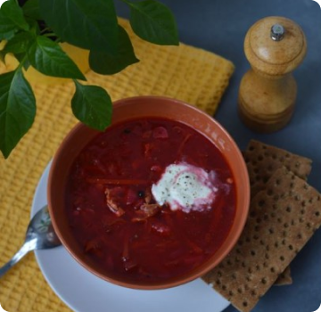

Quinoa Salad
This cold quinoa vegetable salad is a healthy, refreshing salad packed with fresh vegetables and quinoa topped with a simple lemon vinaigrette.

Borscht
Borscht
This borscht is smokey, creamy and has a good balance of sweet and sour given by the beet root and sauerkraut. Healthy, packed with vitamins, great flavour and it is pleasing to the eye.

Hummus
This hummus is a smooth and creamy puree of cooked chickpeas mixed with tahini sesame paste, garlic, lemon juice and spices like smoked paprika as well as carraway seeds.